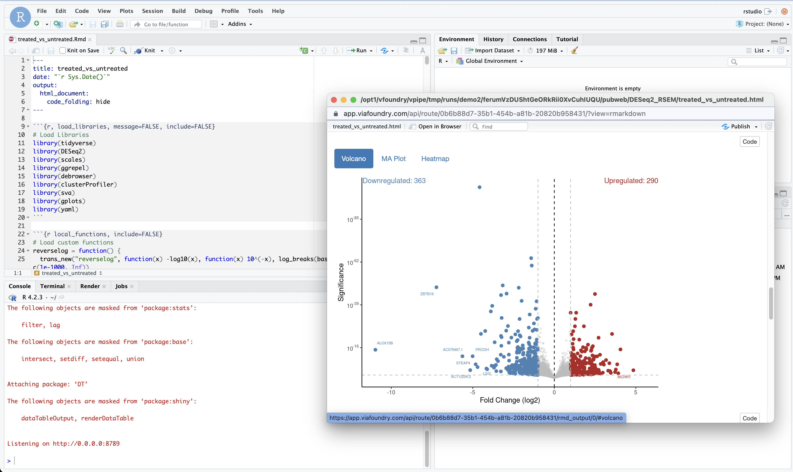

App Guide
Basics
In the top navigation bar, you will find the "App" button. Clicking on this button allows you to access all the shared or public apps available. If you have a specific app in mind that you would like to create, we are here to assist you. Simply contact us at support@viascientific.com for guidance and support.

- Shiny App - DEBrowser
DEBrowser is an R library which provides an easy way to perform and visualize DE (Differential Expression) analysis. This module takes count matrices as input and allows interactive exploration of the resulting data. You can find their documentation here.

- R-Studio - R-Markdown
The R-Studio launcher facilitates interactive analysis of the data generated from a run. We have prepared a set of R-Markdown reports that provide access to your report in HTML or PDF format immediately after the run is completed.
For instance, the code below performs differential expression analysis for each comparison listed in the compare file. It generates volcano and MA plots for differentially expressed genes in each comparison:

- Jupyter Notebook
The Jupyter Notebook app, due to its interactive and flexible nature, allows bioinformatics researchers to combine code, visualizations, and explanatory text in a single document. Bioinformaticians can write and execute code snippets in real-time, visualize data using various plotting libraries, and document their analyses step-by-step.

- Shiny App - GSEA Explorer
GSEA Explorer is an R library that offers a convenient method for conducting and visualizing Gene Set Enrichment Analysis (GSEA). GSEA aims to assess whether a specific gene set or pathway is enriched in gene expression data, indicating its potential biological significance in the studied condition. The GSEA Explorer application can be accessed after executing Foundry's complete RNA-sequencing pipeline or the standalone Differential Expression module. By leveraging GSEA Explorer, researchers can gain valuable insights into the functional implications of gene sets and pathways, aiding in the interpretation of RNA-seq results and facilitating a deeper understanding of biological mechanisms.

- Shiny App - Network Explorer
The Network Explorer allows bioinformaticians to explore and analyze these complex networks, helping them uncover hidden patterns, identify key players, and understand the underlying biological mechanisms. The Network Explorer application can be launched after running Foundry's full RNA-sequencing pipeline or the stand-alone Differential Expression module.

Support
For any questions or help, please reach out to support@viascientific.com with your name and question.